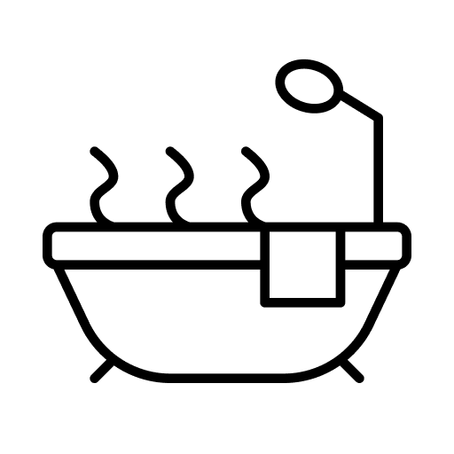
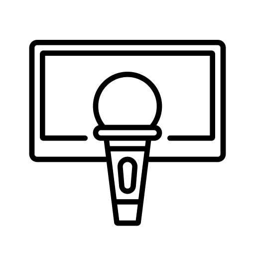
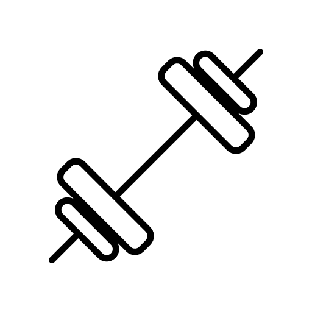

02 / VISUAL SYSTEM
课程项目 · 智能家居活动图标
未来家居图标
为家庭活动和智能设备状态建立一套易识别、可扩展的单色线性图标语言。



INSIGHT
竞品普遍回答“哪台设备”，很少回答“人在做什么”。
把居家活动作为新的语义层。
这个空缺决定了图标系统的方向。图标不只表示设备，也要用人物、动作和空间关系表达家庭状态。
01
从活动语义提炼图形
先拆分“家庭、人物、设备、动作”四类元素，再组合成沐浴、烹饪、观影、清洁、睡眠和运动等场景。图标重点回答“人在做什么”，也让物品成为空间状态的提示。
家庭空间与归属
人物谁在场
动作正在做什么
物品状态提示
家庭人物活动
02
规范落到应用测试
统一网格、线宽、端点和圆角后，图标可以继续扩展到更多设备和家庭模式，也能放入 App 的卡片、控制面板和状态提示中。下面展示规则放入控制面板后的应用示意。
- 24×24 画布，内容压进 20×20 安全区
- 1px 线宽，圆头端点和圆角连接
- 单色使用，保证不同状态下的识别稳定
HOMEGood evening